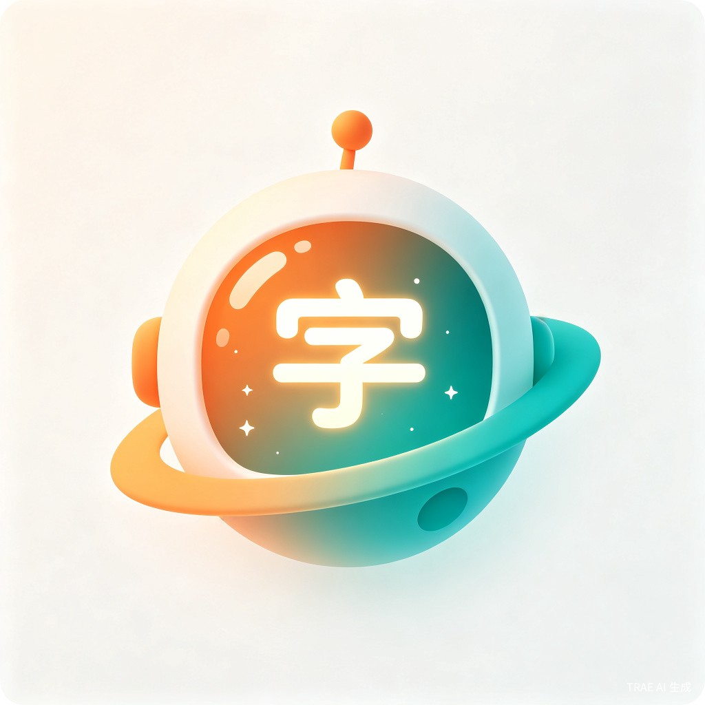
让每个汉字变成孩子的星际探险
「探字星球」是一款面向 3-6 岁幼儿 的趣味汉字启蒙微信小程序。很久很久以前，仓颉创造了汉字，每一个字都藏着一个宇宙。今天，孩子们登上星际飞船，去探访那些由仓颉留下的汉字星球——在"山"字星球攀登，在"水"字星球漂流，在"火"字星球探险……每认识一个汉字，就点亮一颗星球。全免费 · 无广告
想解决什么问题
中国3-6岁幼儿约5000万，幼小衔接焦虑困扰绝大多数家长。现有产品两极分化——要么纯游戏化导致"孩子只玩不学"，要么枯燥机械让孩子抵触。更关键的是，优质识字产品普遍收费高昂，低收入家庭难以负担。
为什么会想到做这个
观察到三个真实痛点：家长没时间系统教、孩子笔顺错误难纠正、优质产品收费高。汉字本身就是最好的"游戏素材"——每个字都有象形故事和造字智慧，完全可以做成一场探索冒险。
产品形态
微信小程序 — 基于 TRAE Work Auto 模式快速开发，结合 AI 自适应学习算法，为每个孩子定制专属学习路径。无需下载安装，打开即用。
AI 技术驱动
利用 TRAE Work 的 Auto 模式快速搭建原型，结合 AI 笔顺识别、自适应学习算法和语音伴读，实现"千人千面"的个性化识字体验。
四大 AI 技术亮点
TRAE Work Auto 模式
AI 辅助生成核心代码和 UI 设计，开发周期缩短 70%
AI 笔顺识别引擎
Canvas 实时追踪书写轨迹，智能判断笔顺正确性
AI 自适应学习
动态调整难度和复习节奏，实现"千人千面"
AI 语音伴读
TTS 合成童声讲解汉字故事，替代家长带读
🌟 探字星球 · 品牌渊源
📜 典出《易经·蒙卦》
"蒙以养正，圣功也。"——在童蒙阶段施以正确教育，是圣人之功。"探字"二字，源自"探赜索隐"的探索精神，呼应《龙文鞭影》的蒙学传统。
✨ 典出《千字文》
"天地玄黄，宇宙洪荒。"——古人以宇宙视角认识世界，我们以星际探险认识汉字。从仓颉造字到 AI 启蒙，千年蒙学智慧，在探字星球重新发光。
🔍 典出《说文解字》
东汉许慎首创"六书"理论，系统分析汉字形音义。我们延续这份学术精神，让孩子从源头理解汉字，不仅"认字"，更"懂字"。
🚀 从仓颉到 AI
相传仓颉造字时"天雨粟，鬼夜哭"，汉字诞生是文明的大事件。今天，AI 延续这份造字智慧，为每个孩子定制专属的汉字探索之旅。
为谁而做？在什么场景下使用？
核心用户是 3-6 岁学龄前儿童 及其家长。孩子在家庭日常、幼儿园课后或外出等待等碎片时间使用，每次 5-15 分钟，家长通过陪伴模式参与互动。
| 使用场景 | 时长 | 使用方式 |
|---|---|---|
| 睡前亲子时间 | 10-15 分钟 | 家长陪伴，一起学习汉字故事 |
| 幼儿园课后 | 5-10 分钟 | 孩子自主完成每日打卡 |
| 外出等待 | 5 分钟 | 碎片化闯关，解锁新星球 |
| 周末家庭时间 | 15-20 分钟 | 家长孩子互动对战 |
家长端痛点
不知道怎么科学教、没时间陪、看不到学习效果
孩子端痛点
写字笔顺老出错、认字靠死记、学了就忘
产品端痛点
优质产品收费高、广告干扰学习、内容零散无序
四大模块，打造沉浸式汉字体验
AI 笔顺互动练习
相传仓颉造字时，观察鸟兽足迹而悟得笔顺之道。今天，AI 延续这份智慧，实时追踪书写轨迹，智能判断笔顺正确性，让每个孩子都能写出仓颉认可的好字。
- AI 笔顺识别引擎，自动判断书写正确性
- 分阶难度：描红 → 临摹 → 独立书写
- 趣味动画引导，每写对一笔都有即时奖励
- 错误时 AI 用动画演示正确写法

探字星球冒险
《千字文》开篇"天地玄黄，宇宙洪荒"，古人以宇宙视角认识世界。今天，孩子化身小小探险家，在千字宇宙中探访每一颗汉字星球，自然习得汉字。
- 象形配对：将汉字与对应图片连线
- 星球闯关：解锁新汉字星球，收集宝藏卡
- 亲子对战：家长与孩子 PK 识字速度
- 排行榜：激发孩子的竞争动力
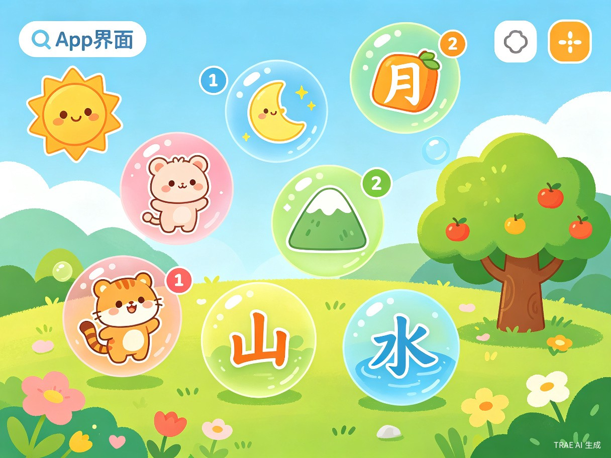
造字故事动画
东汉许慎著《说文解字》，首创"六书"理论分析汉字本源。我们用精美动画延续这份学术精神，讲述每个汉字从甲骨文到现代汉字的演变故事，让孩子不仅"认字"，更"懂字"。
- 甲骨文 → 金文 → 小篆 → 隶书 → 楷书完整演变
- AI 童声语音讲解，培养语感
- 互动问答巩固记忆
- 关联成语、诗词，拓展文化视野

成就与奖励体系
《易经·蒙卦》曰"蒙以养正，圣功也"——在启蒙阶段培养端正品性，是圣人之功。我们的成长体系延续这份蒙学精神，让孩子在游戏中循序渐进，从"童蒙"走向"开蒙"。
- 每日学习打卡，连续学习有额外奖励
- 汉字图鉴收集，激发探索欲
- 家长端查看学习报告，了解孩子进度
- 从"识字小新手"到"汉字探险家"的升级路径
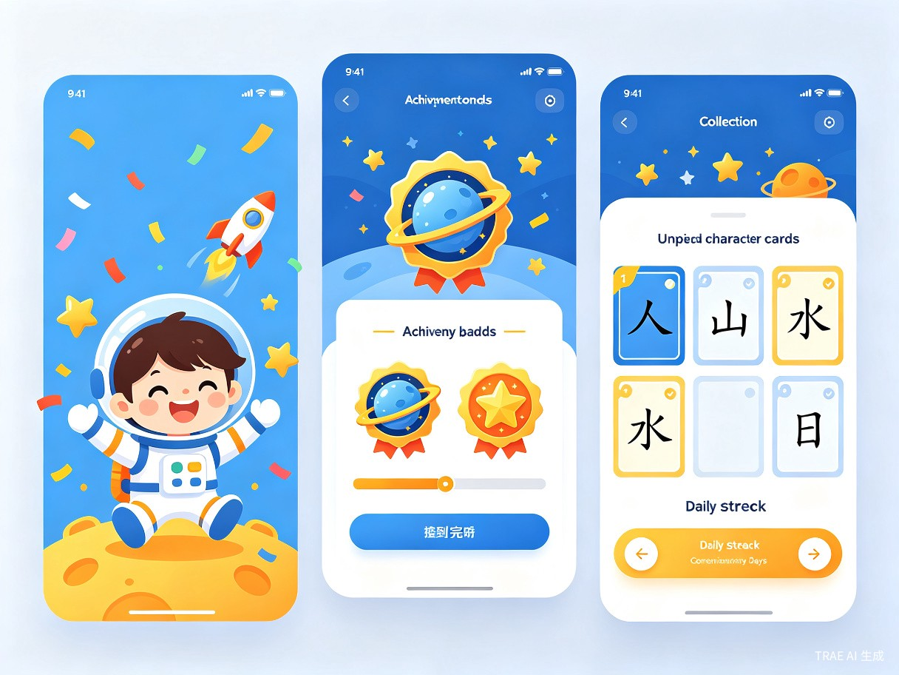
宣传海报
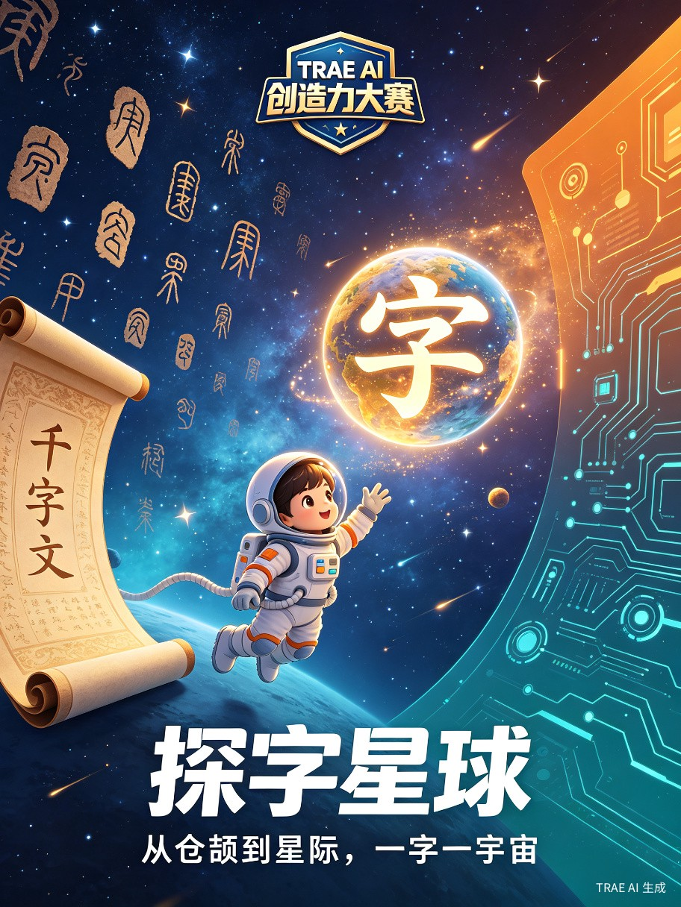
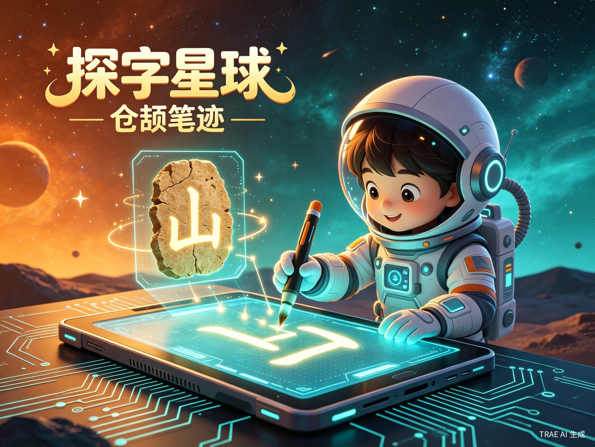
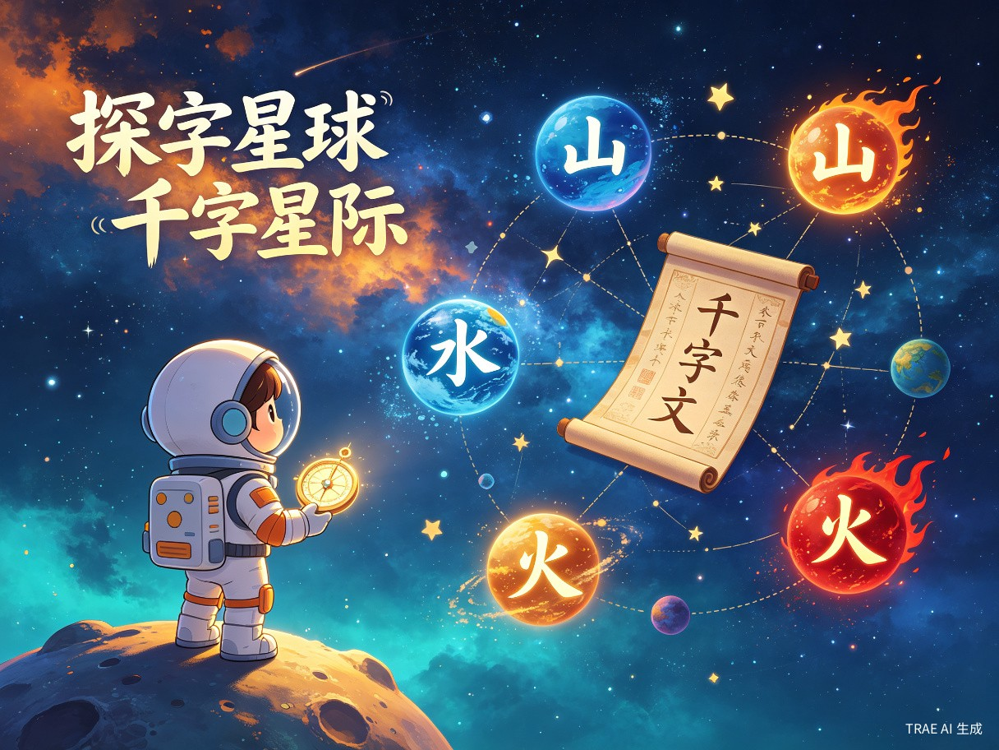
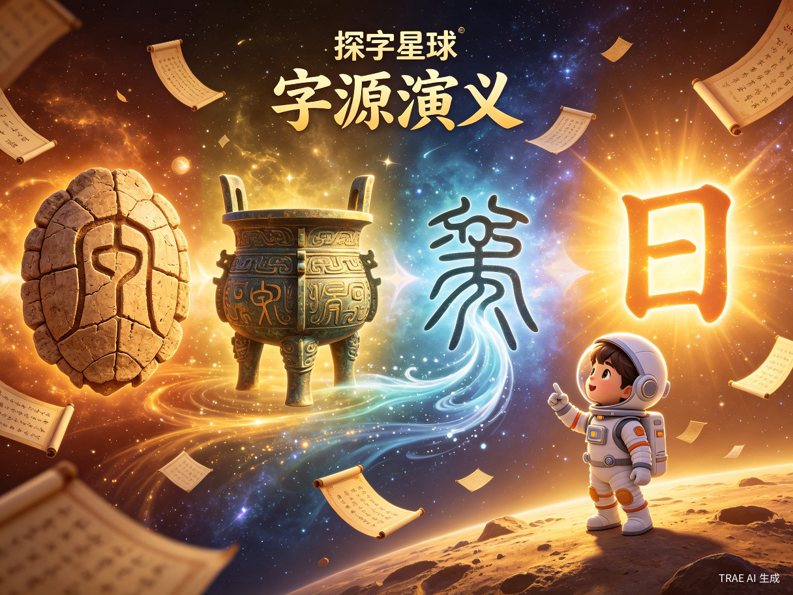
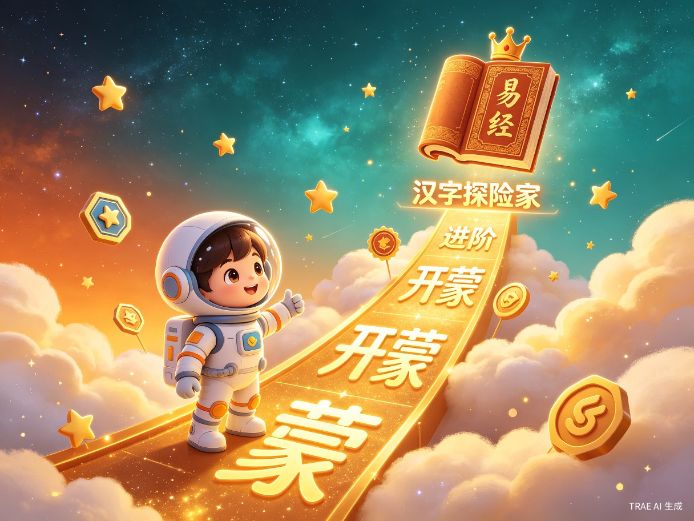
用户旅程 & 技术架构
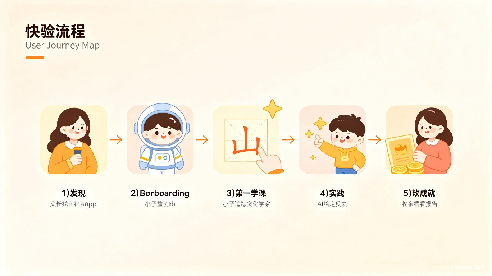
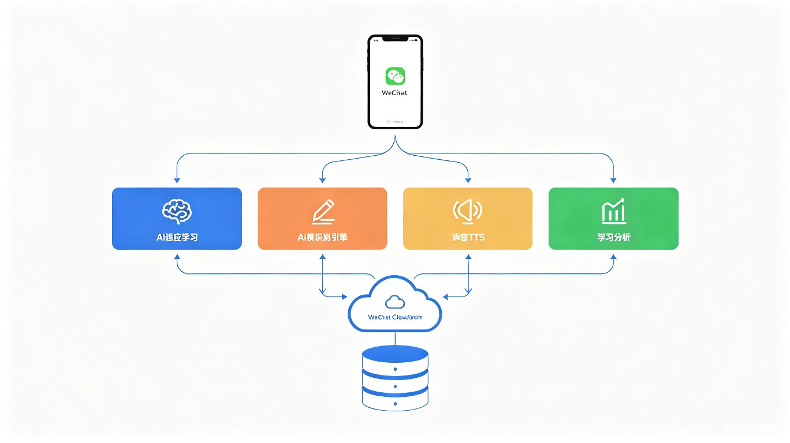
为什么这个创意值得被实现？
社会价值：教育公平的践行者
所有汉字内容完全免费、无广告，让每一个孩子——无论城市还是农村、无论家庭经济条件如何——都能获得高质量的汉字启蒙资源。微信小程序零门槛，打开即用，真正实现教育普惠。
效率提升：AI让识字事半功倍
AI 自适应算法基于艾宾浩斯遗忘曲线安排复习，识字效率预计提升 2-3 倍。AI 笔顺识别实时纠正错误笔顺，避免形成错误习惯后难以纠正。
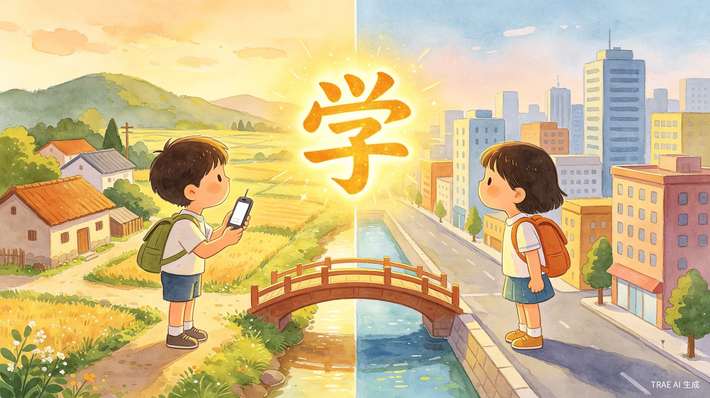
教育普惠：让城乡孩子共享优质汉字启蒙资源
文化传承：从甲骨文开始
通过甲骨文演变动画，让孩子理解汉字本源，传承中华文化。每个汉字都有造字故事，让孩子不仅"认字"，更"懂字"。
家庭和谐：减少陪读焦虑
AI 伴读替代家长带读，科学的学习路径让家长从"不知道怎么教"的焦虑中解放出来，亲子时间从"鸡飞狗跳"变成"共同探险"。
与市面主流产品的差异化对比
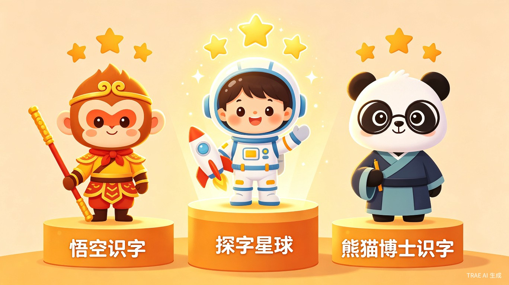
| 对比维度 | 悟空识字 | 熊猫博士识字 | 探字星球 |
|---|---|---|---|
| 核心模式 | IP剧情闯关 | 七步闭环教学 | AI自适应 + 星际探险 |
| 笔顺纠正 | 无实时识别 | 无实时识别 | AI实时笔顺识别 |
| 个性化 | 固定路径 | 固定路径 | AI动态调整难度 |
| 文化深度 | 浅 | 浅 | 甲骨文演变动画 |
| 价格 | 年卡数百元 | 年卡数百元 | 完全免费 |
| 广告 | 有 | 有 | 零广告 |
| 开发工具 | 传统开发 | 传统开发 | TRAE Work AI辅助 |
内容免费，价值在别处
「探字星球」坚持 所有汉字学习内容完全免费、无广告 的原则。我们不向孩子和家长收费，而是通过以下渠道实现可持续发展：
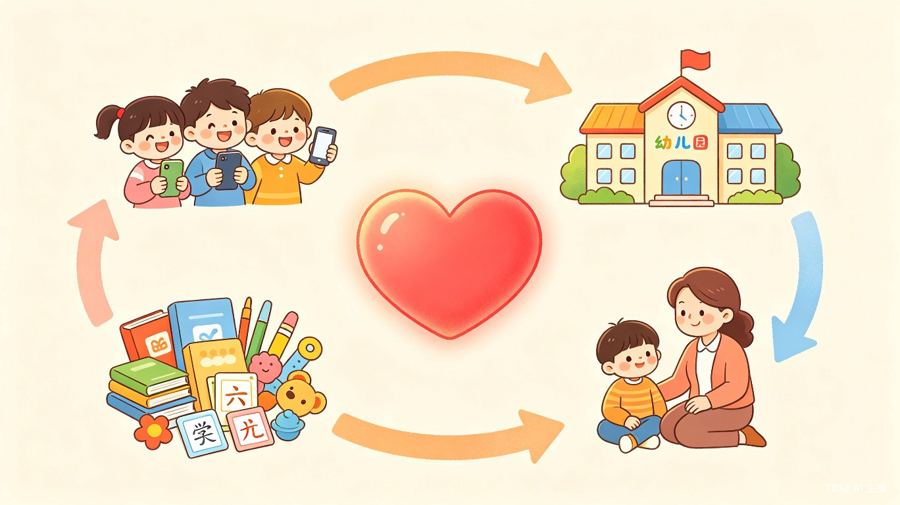
幼儿园B端合作
为幼儿园提供定制化汉字教学方案，包括教师管理后台、班级学习数据看板、家园共育功能。按园所/学期收取服务费，这是核心收入来源。
实体教辅产品
基于线上内容开发配套实体产品：汉字描红本、甲骨文故事绘本、汉字卡牌桌游、宇航员文具套装等，通过电商和幼儿园渠道销售。
家长课程与讲座
开设"科学识字家长课"，教授家长如何正确引导孩子识字。线上线下结合，按课程收费。也可与早教机构合作分成。
赛事与活动赞助
举办"探字星球"全国幼儿汉字大赛，吸引品牌赞助。通过赛事扩大影响力，形成品牌效应，带动其他变现渠道。
基于 TRAE Work 快速构建
本产品原型完全使用 TRAE Work Auto 模式 生成，展示了 AI 辅助开发的强大能力。从创意构思到原型落地，借助 TRAE 的智能代码生成和设计能力，开发周期缩短 70%。
TRAE Work 具体使用场景：
- 1. Auto模式生成页面框架：输入需求描述，TRAE 自动生成 WXML/WXSS 代码
- 2. AI 辅助 Canvas 书写组件：描述笔顺识别需求，TRAE 生成核心路径比对算法
- 3. 智能 UI 设计：根据"太空探险"主题，TRAE 推荐配色方案和组件样式
- 4. 代码优化：TRAE 自动检测并优化性能瓶颈
从 MVP 到完整产品的演进
核心识字功能上线
微信小程序基础框架 + 首页UI + 趣味书写模块（Canvas笔顺练习 + AI识别）+ 10个基础汉字 + 微信云开发数据存储
AI 个性化 + 游戏化
AI自适应学习算法 + 探字冒险游戏模块 + 汉字故事动画 + 成就系统 + 家长端报告 + 扩展至100字
B端合作 + 商业化
幼儿园B端合作方案 + 实体教辅产品开发 + 家长课程 + 汉字库扩展至500+字 + 多语言版本（海外华人儿童）
五大维度全面覆盖
技术可行性
微信小程序成熟生态 + 微信云开发免运维 + TRAE Work AI辅助开发，技术路径清晰可靠
创意创新性
"探字"概念市面空白 + AI实时笔顺识别技术首创 + 星际探险主题差异化
场景落地价值
解决5000万幼儿家庭的真实痛点，使用场景明确（睡前/课后/等待）
商业发展潜力
B端幼儿园合作 + 实体教辅 + 家长课程 + 赛事赞助，多元变现路径清晰
社会公益意义
所有内容完全免费无广告，让低收入家庭也能获得优质识字资源；甲骨文动画传承中华文化；减少家长陪读焦虑，促进家庭和谐。完全契合"社会公益"赛道方向——教育普惠与青少年成长。